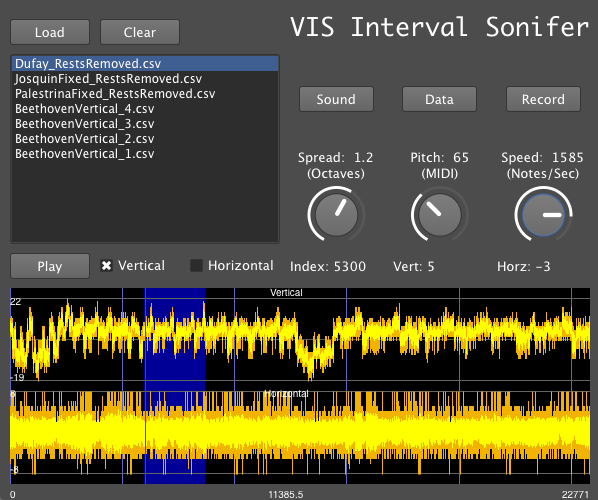

Sonification of Intervals
Posted by Mike Winters on October 01, 2013
I’ve been working on the ELVIS project for a little bit over a month now. Though I began working with Christopher on the web-interface and back-end, in the past few weeks, I’ve been focused mostly on sonification.
Sonification, in case you don’t know, is a systematic process in which data is transformed into sound. At the moment, I’ve been listening to the extracted intervals of Dufay, Josquin, Palestrina, and Beethoven at speeds up to 10,000 intervals per second. Though I predicted that sonification could be used to differentiate these corpora, it turns out that it can probably do much more. For the Digging into Data Conference, I’ve generated some recordings in which sonification exposes dramatic changes in the temporal evolution of the data, and helps identify patterns at local and global time scales.
To give you an idea of what each interval sounds like, imagine a pianist lightly striking the piano as quickly as possible. The resulting note is extremely short, and extremely soft. Although no pianist could play through all of these intervals at such high speeds, playing each note softly and quickly makes it possible for the most amount of notes to be heard. There is less-overlap between notes, and playing softly means that more notes can be played without the overal sound getting outrageously loud at high speeds.
To really experiment and play around with these corpora, I quickly found that just listening was not going to be good enough. With over 25,000 intervals in each database, I needed a way that I simultaneously view the data, zoom in on local events, quickly swap between listening to horizontal and vertical intervals, and the corpora (e.g. Beethoven, Josquin, etc.). That’s why I made a GUI (a graphical user interface). With it, I can also understand properties of the data visually, and use sound to expose patterns that I previously could not see.

My favorite part so far is the speed knob. It’s fun to see how many notes I can play at a time before my computer starts notably combusting. It’s not so bad, it just sounds like holes in the data. The knob goes up to 10,000 intervals per second, but on my small laptop, I can usually get it up to ~6,500 (sometimes less if recording).
In the future, we’re considering ways of making the program more accessible. Right now, you have to have SuperCollider (and some extra code hacks) to get it to work on another computer. For musicologists and other music researchers, I think it would be nice to just make it so you can boot it just like any other application. I wonder if anyone is interested in this besides me?